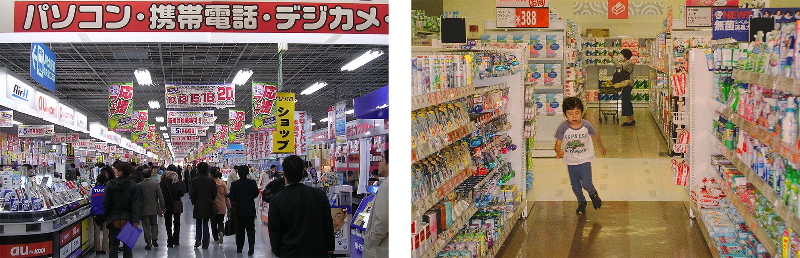
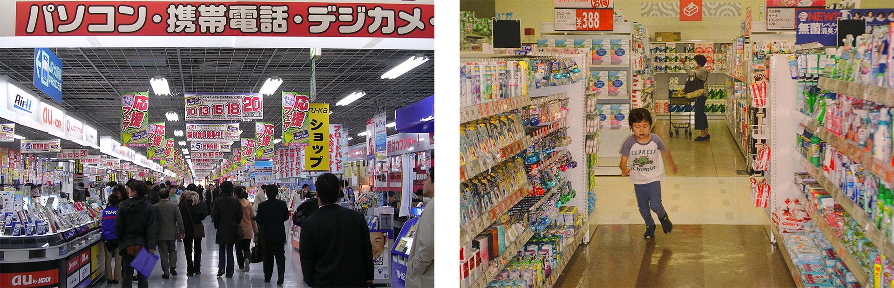
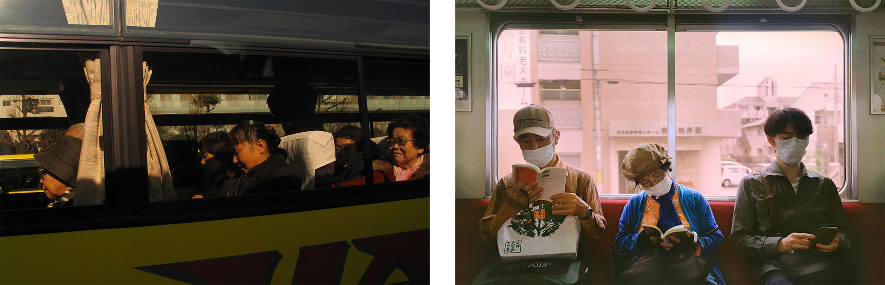
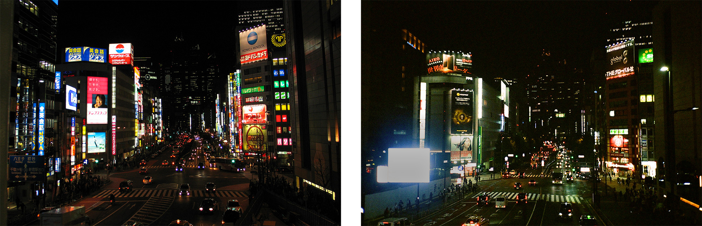
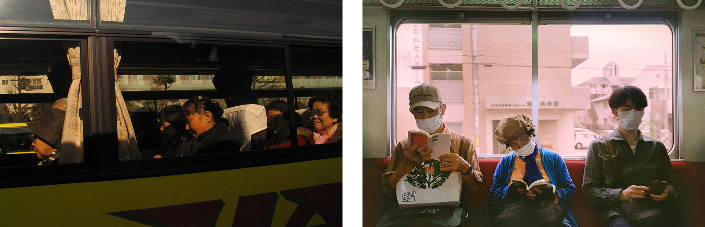
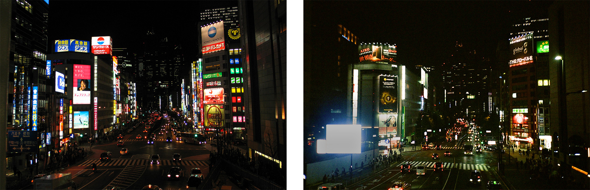
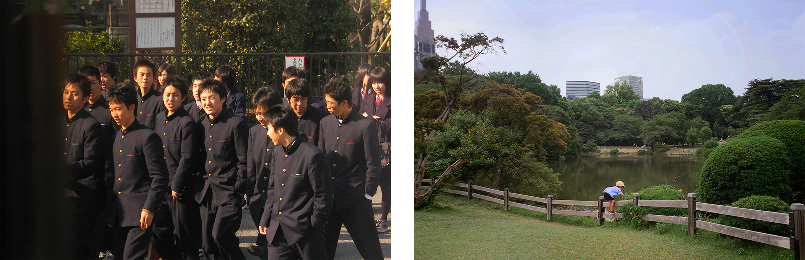
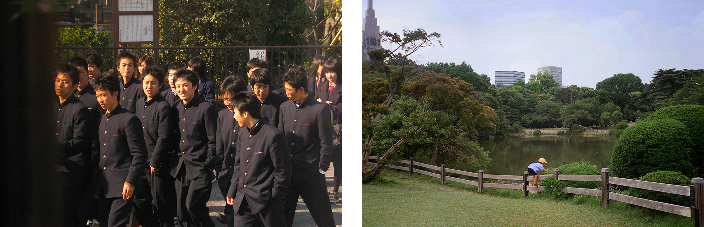
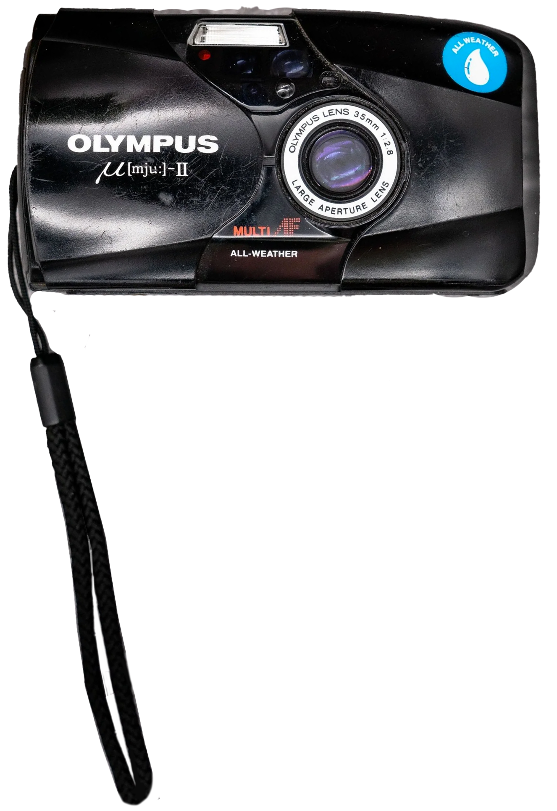

2005/24
fotografia,
tóquio 2024.


 

 





 


Há quase 20 anos, a minha mãe, Ana Anes, fez uma viagem ao Japão, documentada em fotografias tiradas por ela e pela sua amiga Teresa Alves. Essas fotografias, juntamente com os brinquedos japoneses que recebi, criaram em mim uma grande vontade de visitar o Japão.
Este ano, pude passar 3 meses em Tóquio e visitar outras cidades do país, onde tentei fazer uma documentação fotográfica paralela à da minha mãe. Procurei reproduzir algumas das fotografias, localizando os exatos lugares, mas também criei ligações menos imediatas entre as fotografias de 2005 e as de 2024.
